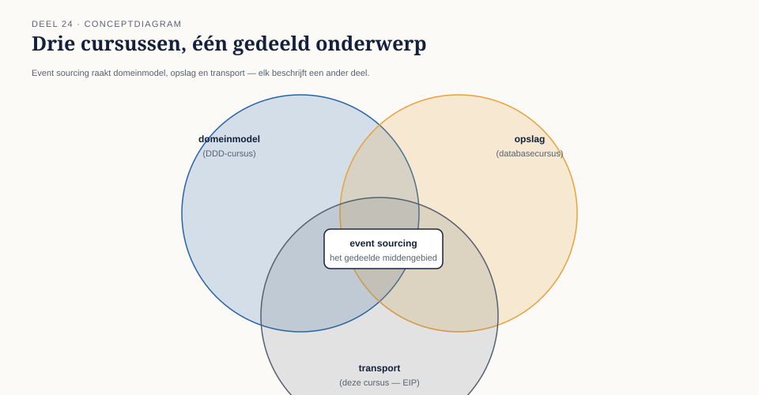

24.0 Een vraag die niet bij deze cursus hoort
Sectie 1 van 6Tijdens de bouw van de invaarketen stelde een ontwikkelaar Caspar een vraag die, hoe terecht ook, buiten de scope van deze cursus valt: "Als we toch alle events van een deelnemer permanent bewaren, kunnen we dan niet gewoon de hele huidige toestand van die deelnemer berekenen door alle events opnieuw af te spelen, in plaats van een aparte, actuele databasetabel bij te houden?"
Het antwoord is ja — dat is precies event sourcing als architectuurpatroon: in plaats van de huidige toestand op te slaan en bij elke wijziging te overschrijven, wordt alleen de reeks events opgeslagen, en wordt de huidige toestand afgeleid door die events opnieuw toe te passen. Dit is een krachtig en veelgebruikt patroon — en het is ook precies het onderwerp van twee andere cursussen in deze familie: de DDD-cursus behandelt hoe event sourcing het domeinmodel vormgeeft (aggregates, domain events, hoe een aggregate zijn eigen geschiedenis reconstrueert), en de databasecursus behandelt het technisch als opslagpatroon (event store-ontwerp, snapshotting voor prestatie, query-modellen).
Deze cursus behandelt geen van beide. Wat deze cursus wél behandelt — en wat de andere twee cursussen bewust niet behandelen, om overlap te vermijden — is de vraag die aan beide voorafgaat: hoe reizen die events, als berichten, betrouwbaar door een keten van systemen, zodat elk systeem dat ze nodig heeft, ze op tijd, in de juiste volgorde en zonder verlies ontvangt? Dat is de transportvraag, en die valt volledig binnen het domein van Enterprise Integration Patterns.

Kernzin 24 van de cursus: event sourcing is één architectuurpatroon met drie aspecten — hoe het domein zijn geschiedenis modelleert, hoe die geschiedenis wordt opgeslagen, en hoe die geschiedenis als berichten door een keten reist. Deze cursus behandelt uitsluitend het derde.